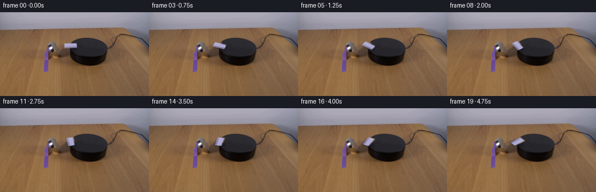
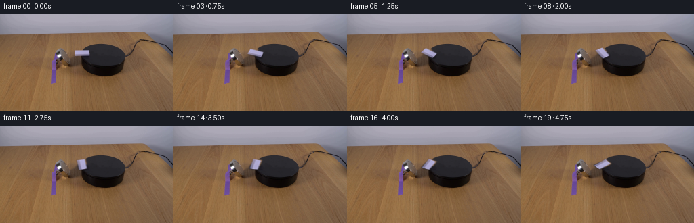
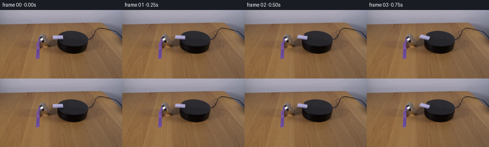
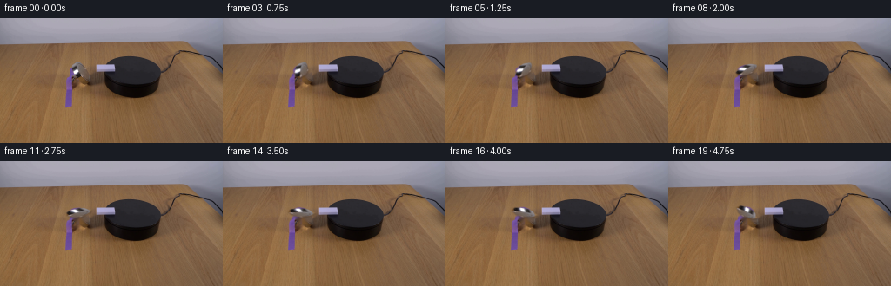
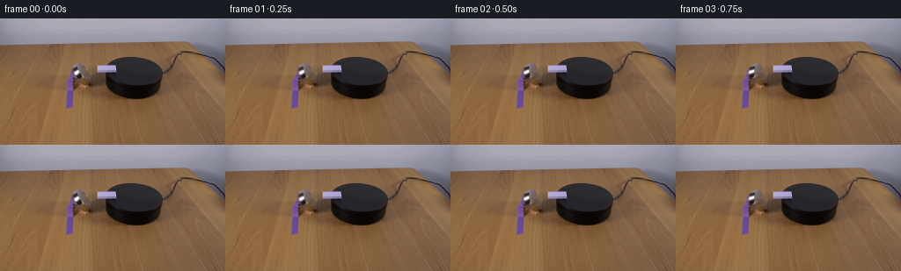

CODING AGENTS AS PIXEL WORLD MODELS
traex/GPT-5.6-Sol · 0095
点击播放 · 原生 RGB 像素
逐轮保存的候选
回放视频、检查图与代码变化。
每份候选均可单独播放。实际图片检查记录在下方工具轨迹中。
候选 01播放与检查图
点击播放 · 原生 RGB 像素

展开代码变化
--- 上一保存版本
+++ 本次保存版本
@@ -0,0 +1,133 @@
+from pathlib import Path
+
+import cv2
+import numpy as np
+from PIL import Image
+
+import artifact_io
+
+
+CASE_DIR = Path(__file__).resolve().parent
+SCALE = 4
+HEIGHT, WIDTH = 144, 256
+
+
+def soft_polygon(shape, points, blur_radius=0.55):
+ """Return an antialiased mask drawn at the working resolution."""
+ h, w = shape
+ mask = np.zeros((h, w), np.uint8)
+ pts = np.rint(np.asarray(points) * SCALE).astype(np.int32)
+ cv2.fillConvexPoly(mask, pts, 255, lineType=cv2.LINE_AA)
+ sigma = blur_radius * SCALE
+ mask = cv2.GaussianBlur(mask, (0, 0), sigmaX=sigma, sigmaY=sigma)
+ return mask.astype(np.float32) / 255.0
+
+
+def affine_for_surface_rotation(angle_degrees, center):
+ """Image transform for rotation in the foreshortened platform plane.
+
+ The platform's circular top projects to an ellipse about 0.66 as tall as
+ it is wide. Deprojecting y before rotation keeps the domino attached to
+ that plane instead of making it appear to stand up as it turns.
+ """
+ theta = np.deg2rad(angle_degrees)
+ c, s = np.cos(theta), np.sin(theta)
+ foreshorten = 0.66
+ linear = np.array(
+ [[c, -s / foreshorten], [foreshorten * s, c]], dtype=np.float32
+ )
+ center = np.asarray(center, np.float32) * SCALE
+ linear_scaled = linear
+ translation = center - linear_scaled @ center
+ return np.column_stack((linear_scaled, translation)).astype(np.float32)
+
+
+def build_frames():
+ first = np.asarray(Image.open(CASE_DIR / "first_frame.png").convert("RGB"))
+ assert first.shape == (HEIGHT, WIDTH, 3)
+
+ # The domino is the softly lit, white/lilac cuboid at x=110..132,
+ # y=53..61. This quadrilateral follows its antialiased silhouette while
+ # excluding the neighbouring brown magnet housing and black platform.
+ object_polygon = np.array(
+ [(109.55, 52.65), (130.75, 52.65), (132.55, 57.25),
+ (132.55, 61.45), (110.25, 61.45), (109.55, 53.55)],
+ dtype=np.float32,
+ )
+
+ # Reconstruct only the few pixels hidden by the original domino. Telea
+ # interpolation follows the strong diagonal table/platform boundary and
+ # keeps everything outside this small occlusion pixel-identical.
+ inpaint_mask = np.zeros((HEIGHT, WIDTH), np.uint8)
+ cv2.fillPoly(
+ inpaint_mask,
+ [np.rint(object_polygon).astype(np.int32)],
+ 255,
+ lineType=cv2.LINE_AA,
+ )
+ inpaint_mask = cv2.dilate(inpaint_mask, np.ones((3, 3), np.uint8), iterations=1)
+ bgr = cv2.cvtColor(first, cv2.COLOR_RGB2BGR)
+ restored = cv2.cvtColor(
+ cv2.inpaint(bgr, inpaint_mask, 2.2, cv2.INPAINT_TELEA),
+ cv2.COLOR_BGR2RGB,
+ )
+
+ work_size = (WIDTH * SCALE, HEIGHT * SCALE)
+ background = cv2.resize(restored, work_size, interpolation=cv2.INTER_LANCZOS4).astype(np.float32)
+ source = cv2.resize(first, work_size, interpolation=cv2.INTER_LANCZOS4).astype(np.float32)
+ source_alpha = soft_polygon((HEIGHT * SCALE, WIDTH * SCALE), object_polygon)
+ source_pm = source * source_alpha[..., None]
+
+ center = (121.05, 57.15)
+ frames = [first.copy()]
+
+ for index in range(1, 20):
+ # A steady 30 degrees/second gives an unambiguous real-time turn of
+ # 142.5 degrees over the recorded 4.75 seconds.
+ angle = 7.5 * index
+ matrix = affine_for_surface_rotation(angle, center)
+
+ alpha = cv2.warpAffine(
+ source_alpha,
+ matrix,
+ work_size,
+ flags=cv2.INTER_CUBIC,
+ borderMode=cv2.BORDER_CONSTANT,
+ borderValue=0,
+ )
+ alpha = np.clip(alpha, 0.0, 1.0)
+ color_pm = cv2.warpAffine(
+ source_pm,
+ matrix,
+ work_size,
+ flags=cv2.INTER_CUBIC,
+ borderMode=cv2.BORDER_CONSTANT,
+ borderValue=(0, 0, 0),
+ )
+
+ # A very small contact shadow anchors the cuboid to the black top.
+ shadow_matrix = matrix.copy()
+ shadow_matrix[:, 2] += np.array([0.55, 1.05], np.float32) * SCALE
+ shadow = cv2.warpAffine(
+ source_alpha,
+ shadow_matrix,
+ work_size,
+ flags=cv2.INTER_CUBIC,
+ borderMode=cv2.BORDER_CONSTANT,
+ borderValue=0,
+ )
+ shadow = cv2.GaussianBlur(np.clip(shadow, 0, 1), (0, 0), 0.7 * SCALE)
+ shadow_strength = 0.20 * shadow[..., None]
+ canvas = background * (1.0 - shadow_strength)
+
+ # Warping premultiplied colour avoids a dark fringe around the pale
+ # domino when it crosses the near-black platform.
+ canvas = canvas * (1.0 - alpha[..., None]) + color_pm
+ frame = cv2.resize(canvas, (WIDTH, HEIGHT), interpolation=cv2.INTER_AREA)
+ frames.append(np.clip(np.rint(frame), 0, 255).astype(np.uint8))
+
+ return np.stack(frames, axis=0)
+
+
+if __name__ == "__main__":
+ artifact_io.save(build_frames(), CASE_DIR)
候选 02播放与检查图
点击播放 · 原生 RGB 像素


展开代码变化
--- 上一保存版本
+++ 本次保存版本
@@ -123,8 +123,15 @@
# Warping premultiplied colour avoids a dark fringe around the pale
# domino when it crosses the near-black platform.
canvas = canvas * (1.0 - alpha[..., None]) + color_pm
- frame = cv2.resize(canvas, (WIDTH, HEIGHT), interpolation=cv2.INTER_AREA)
- frames.append(np.clip(np.rint(frame), 0, 255).astype(np.uint8))
+ rendered = cv2.resize(canvas, (WIDTH, HEIGHT), interpolation=cv2.INTER_AREA)
+ rendered = np.clip(np.rint(rendered), 0, 255).astype(np.uint8)
+
+ # Resampling the whole working canvas would introduce sub-pixel
+ # changes into an otherwise locked shot. Transfer only the compact
+ # region swept by the domino and its contact shadow.
+ frame = first.copy()
+ frame[45:72, 104:139] = rendered[45:72, 104:139]
+ frames.append(frame)
return np.stack(frames, axis=0)
候选 03播放与检查图
点击播放 · 原生 RGB 像素


展开代码变化
--- 上一保存版本
+++ 本次保存版本
@@ -46,12 +46,13 @@
first = np.asarray(Image.open(CASE_DIR / "first_frame.png").convert("RGB"))
assert first.shape == (HEIGHT, WIDTH, 3)
- # The domino is the softly lit, white/lilac cuboid at x=110..132,
- # y=53..61. This quadrilateral follows its antialiased silhouette while
- # excluding the neighbouring brown magnet housing and black platform.
+ # The domino is the small, strongly highlighted plastic piece immediately
+ # left of the magnet. Warm room light, the black platform, and its blue
+ # edge make its shaded faces look grey/violet, while the centre highlight
+ # remains pure white. The polygon follows that complete little cuboid.
object_polygon = np.array(
- [(109.55, 52.65), (130.75, 52.65), (132.55, 57.25),
- (132.55, 61.45), (110.25, 61.45), (109.55, 53.55)],
+ [(86.4, 49.1), (91.2, 50.4), (98.1, 57.3), (98.2, 63.0),
+ (94.0, 68.5), (88.0, 67.7), (82.3, 62.2), (82.2, 56.8)],
dtype=np.float32,
)
@@ -78,12 +79,13 @@
source_alpha = soft_polygon((HEIGHT * SCALE, WIDTH * SCALE), object_polygon)
source_pm = source * source_alpha[..., None]
- center = (121.05, 57.15)
+ center = (90.25, 59.05)
frames = [first.copy()]
for index in range(1, 20):
# A steady 30 degrees/second gives an unambiguous real-time turn of
- # 142.5 degrees over the recorded 4.75 seconds.
+ # 142.5 degrees over the recorded 4.75 seconds. Positive image-plane
+ # angle is clockwise because image y increases downward.
angle = 7.5 * index
matrix = affine_for_surface_rotation(angle, center)
@@ -130,7 +132,7 @@
# changes into an otherwise locked shot. Transfer only the compact
# region swept by the domino and its contact shadow.
frame = first.copy()
- frame[45:72, 104:139] = rendered[45:72, 104:139]
+ frame[42:77, 74:107] = rendered[42:77, 74:107]
frames.append(frame)
return np.stack(frames, axis=0)
候选 04播放与检查图
点击播放 · 原生 RGB 像素
展开代码变化
--- 上一保存版本
+++ 本次保存版本
@@ -132,7 +132,13 @@
# changes into an otherwise locked shot. Transfer only the compact
# region swept by the domino and its contact shadow.
frame = first.copy()
- frame[42:77, 74:107] = rendered[42:77, 74:107]
+ # Limit modifications to the union of the old silhouette, new
+ # silhouette, and soft shadow. Thus even pixels inside the compact
+ # working crop remain locked unless the moving object affects them.
+ affected_hi = np.maximum.reduce((source_alpha, alpha, shadow * 0.25))
+ affected = cv2.resize(affected_hi, (WIDTH, HEIGHT), interpolation=cv2.INTER_AREA)
+ affected = affected > (1.0 / 255.0)
+ frame[affected] = rendered[affected]
frames.append(frame)
return np.stack(frames, axis=0)
可观测工具轨迹
实际执行的命令与返回图片。
命令 1exit 0
/bin/bash -lc "cat prompt.txt && printf '\\n--- GENERATION_RULES ---\\n' && cat GENERATION_RULES.md"
命令 2exit 0
/bin/bash -lc "find . -maxdepth 2 -type f -printf '%p\\n' | sort && printf '\\n--- tools ---\\n' && command -v ffmpeg || true && command -v python3 || true"
命令 3exit 0
/bin/bash -lc "python3 - <<'PY'
from PIL import Image
im=Image.open('first_frame.png')
print(im.mode, im.size)
print('bbox', im.getbbox())
print('extrema', im.getextrema())
PY"命令 4exit 0
/bin/bash -lc "python3 - <<'PY'
from PIL import Image
import numpy as np
from collections import Counter
im=np.array(Image.open('first_frame.png'))
# common quantized colors
q=(im//16)*16
for c,n in Counter(map(tuple,q.reshape(-1,3))).most_common(30): print(c,n)
# row avg/min/max each 12 px
print('ROWS')
for y in range(0,144,8):
a=im[y:y+8]; print(y, np.mean(a,axis=(0,1)).round(1), np.min(a,axis=(0,1)),np.max(a,axis=(0,1)))
PY"命令 5exit 0
/bin/bash -lc "python3 - <<'PY' import importlib.util for x in ['cv2','scipy','skimage','imageio']: print(x, bool(importlib.util.find_spec(x))) PY"
命令 6exit 0
/bin/bash -lc "python3 - <<'PY'
from PIL import Image
import numpy as np
im=np.array(Image.open('first_frame.png'))
# 4x4 blocks classify by luma + rough hue, print each 4 px (64 cols x36)
for y in range(0,144,4):
s=''
for x in range(0,256,4):
p=im[y:y+4,x:x+4].mean((0,1)); r,g,b=p; v=max(p); m=min(p); lum=p.mean()
if lum<25: c='@'
elif lum<50:c='#'
elif lum<80:c='O'
elif lum<110:c='o'
elif lum<145:c='+'
elif lum<180:c='-'
elif lum<215:c='.'
else:c=' '
if r>g*1.35 and r>b*1.3 and r>80: c='R'
elif b>r*1.25 and b>g*1.08 and b>70:c='B'
elif g>r*1.2 and g>b*1.05 and g>70:c='G'
elif r>b*1.3 and g>b*1.2 and r>80:c='Y'
s+=c
print(f'{y:03} '+s)
PY"命令 7exit 0
/bin/bash -lc "python3 - <<'PY'
import cv2, numpy as np
from PIL import Image
im=np.array(Image.open('first_frame.png'))
for name,mask in [
('white',(im.min(2)>180)),('verywhite',(im.min(2)>220)),('neutralbright',((im.max(2)-im.min(2)<18)&(im.mean(2)>150))),
('dark',(im.max(2)<50)), ('neutraldark',((im.max(2)-im.min(2)<15)&(im.mean(2)<80))),
('blue',((im[:,:,2]>im[:,:,0]*1.2)&(im[:,:,2]>im[:,:,1]*1.05))),
]:
n,lab,stats,cen=cv2.connectedComponentsWithStats(mask.astype('uint8'),8)
print('\\n',name,'pixels',mask.sum())
inds=np.argsort(stats[1:,4])[::-1][:15]+1
for i in inds:
x,y,w,h,a=stats[i]; print(' ',a,(x,y,w,h),tuple(np.round(cen[i],1)))
PY"命令 8exit 0
/bin/bash -lc "python3 - <<'PY'
from PIL import Image
import numpy as np
im=np.array(Image.open('first_frame.png'))
# 2x2 map crop, luminance chars and saturation override selective
chars='@%#*+=-:. '
for y in range(32,108,2):
s=''
for x in range(58,204,2):
p=im[y:y+2,x:x+2].mean((0,1)); r,g,b=p; lum=.2126*r+.7152*g+.0722*b
c=chars[min(9,int(lum/25.6))]
# strongly blue is B
if b-r>25 and b-g>12:c='B'
elif r-b>45 and r-g>15:c='R'
s+=c
print(f'{y:03} {s}')
PY"命令 9exit 0
/bin/bash -lc "python3 - <<'PY'
import cv2, numpy as np
im=cv2.imread('first_frame.png')
g=cv2.cvtColor(im,cv2.COLOR_BGR2GRAY)
# sobel magnitude over 2x2 sampled max, print crop x50:210 y20:110
s=np.hypot(cv2.Sobel(g,cv2.CV_32F,1,0),cv2.Sobel(g,cv2.CV_32F,0,1))
for y in range(20,112,2):
line=''
for x in range(40,220,2):
v=s[y:y+2,x:x+2].max()
line += ' ' if v<25 else '.' if v<60 else '+' if v<120 else '#' if v<250 else '@'
print(f'{y:03} {line}')
PY"命令 10exit 0
/bin/bash -lc "python3 - <<'PY'
from PIL import Image
import numpy as np
A=np.array(Image.open('first_frame.png'))
def cat(p):
r,g,b=map(int,p); mx=max(p);mn=min(p); m=(r+g+b)/3
if m<35:return 'K'
if m<65:return 'k'
if mx-mn<15:
if m>210:return 'I'
if m>170:return 'L'
if m>120:return 'g'
if m>80:return 'd'
return 'n'
if b-r>25 and b-g>12:return 'B'
if b-r>10 and b-g>5:return 'b'
if r-b>45 and r-g>12:return 'R'
if r-b>20:return 'w'
return 'x'
print('x tens ', ''.join(str((x//10)%10) for x in range(65,205)))
print('x ones ', ''.join(str(x%10) for x in range(65,205)))
for y in range(38,106): print(f'{y:03}', ''.join(cat(A[y,x]) for x in range(65,205)))
PY"命令 11exit 0
/bin/bash -lc "python3 - <<'PY'
from PIL import Image
import numpy as np
A=np.array(Image.open('first_frame.png'))
# exact symbols relative based on categories with high precision
for y in range(47,82):
s=''
for x in range(74,114):
r,g,b=map(int,A[y,x]); v=(r+g+b)/3; rg=max(r,g,b)-min(r,g,b)
if v<25:c='@'
elif v<50:c='#'
elif v<75:c='O'
elif rg<18 and v>220:c='W'
elif rg<18 and v>180:c='I'
elif rg<18 and v>140:c='l'
elif rg<18 and v>100:c='g'
elif b-r>25 and b-g>12:c='B'
elif b-r>12 and b-g>5:c='b'
elif r-b>45:c='R'
elif r-b>25:c='r'
else:c='x'
s+=c
print(f'{y:03} {s}')
print('x ',''.join(str(x//10%10) for x in range(74,114)))
print(' ',''.join(str(x%10) for x in range(74,114)))
print('\\nRGB x80:96 y54:72')
for y in range(54,72):print(y, ['%02x%02x%02x'%tuple(A[y,x]) for x in range(80,96)])
PY"命令 12exit 0
/bin/bash -lc "python3 - <<'PY'
from PIL import Image
import numpy as np
A=np.array(Image.open('first_frame.png'))
for y in range(48,78): print(y, ['%02x%02x%02x'%tuple(A[y,x]) for x in range(112,138)])
PY"命令 13exit 0
/bin/bash -lc "python3 - <<'PY'
from PIL import Image
import numpy as np
A=np.array(Image.open('first_frame.png'))
# quantized manually each pixel in x98:140 y44:80: classify using clusters kmeans
from sklearn.cluster import KMeans
crop=A[40:85,95:145]
km=KMeans(12, random_state=0,n_init=10).fit(crop.reshape(-1,3))
cent=km.cluster_centers_
order=np.argsort(cent.mean(1)); mp={old:i for i,old in enumerate(order)}
print([cent[i].round().astype(int).tolist() for i in order])
syms='0123456789AB'
lab=km.predict(crop.reshape(-1,3)).reshape(crop.shape[:2])
print('x ', ''.join(str(x//10%10) for x in range(95,145))); print(' ',''.join(str(x%10) for x in range(95,145)))
for yy,row in enumerate(lab): print(f'{yy+40:03}', ''.join(syms[mp[v]] for v in row))
PY"命令 14exit 0
/bin/bash -lc 'cat artifact_io.py'
命令 15exit 0
/bin/bash -lc "python3 - <<'PY'
from PIL import Image
import numpy as np
A=np.array(Image.open('first_frame.png'))
for y in range(50,64):
print('\\ny',y)
for x in range(98,135):
print(x,tuple(A[y,x]),end='; ')
print()
PY"命令 16exit 0
/bin/bash -lc "python3 generate.py && python3 - <<'PY'
import numpy as np
from PIL import Image
z=np.load('pixels.npz')['pixels']
print('pixels',z.shape,z.dtype)
f=np.stack([np.asarray(Image.open(f'frames/{i:02d}.png')) for i in range(20)])
a=np.asarray(Image.open('first_frame.png'))
print('frames',f.shape,f.dtype,'frame0 exact',np.array_equal(f[0],a))
for i in range(20):
d=np.any(f[i]"'!=a,2)
ys,xs=np.where(d)
print(i, int(d.sum()), (int(xs.min()),int(ys.min()),int(xs.max()),int(ys.max())) if len(xs) else None,
'"'mad',round(float(np.abs(f[i].astype(int)-a).mean()),4))
PY"命令 17exit 0
/bin/bash -lc "python3 generate.py && python3 - <<'PY'
import numpy as np
from PIL import Image
f=np.stack([np.asarray(Image.open(f'frames/{i:02d}.png')) for i in range(20)])
a=np.asarray(Image.open('first_frame.png'))
print('shape/dtype',f.shape,f.dtype,'frame0 exact',np.array_equal(f[0],a))
for i in [1,2,3,5,8,10,13,16,19]:
d=np.any(f[i]"'!=a,2); ys,xs=np.where(d)
print(i, d.sum(), (xs.min(),ys.min(),xs.max(),ys.max()), '"'mad_changed', np.abs(f[i].astype(int)-a.astype(int))[d].mean().round(2))
# frame-to-frame delta and detected pale centroid
for i in range(20):
mask=(f[i,:,:,0]>155)&(f[i,:,:,1]>145)&(f[i,:,:,2]>175)&(np.indices((144,256))[0]>40)&(np.indices((144,256))[0]<75)&(np.indices((144,256))[1]>100)&(np.indices((144,256))[1]<145)
yy,xx=np.where(mask)
print('pale',i,len(xx), tuple(np.round([xx.mean(),yy.mean()],2)) if len(xx) else None)
PY
ls -lh pixels.npz index.html inspection.png frames/00.png frames/19.png"命令 18exit 0
/bin/bash -lc "python3 generate.py && python3 - <<'PY'
import numpy as np
from PIL import Image
f=np.stack([np.asarray(Image.open(f'frames/{i:02d}.png')) for i in range(20)])
a=np.asarray(Image.open('first_frame.png'))
assert f.shape==(20,144,256,3) and f.dtype==np.uint8
assert np.array_equal(f[0],a)
print('validation ok: shape, dtype, frame 00 exact')
for i in [1,2,5,8,10,13,16,19]:
d=np.any(f[i]"'!=a,2); ys,xs=np.where(d)
print(i, '"'changed',d.sum(),'bbox',(xs.min(),ys.min(),xs.max(),ys.max()),'mad',round(np.abs(f[i].astype(int)-a.astype(int))[d].mean(),2))
# Outside prescribed compact animation patch must remain exact every frame.
out=np.ones((144,256),bool); out[42:77,74:107]=False
print('outside patch exact', all(np.array_equal(x[out],a[out]) for x in f))
z=np.load('pixels.npz')['pixels']; print('packed artifact',z.shape,z.dtype)
PY
python3 -m py_compile generate.py artifact_io.py
ls -lh pixels.npz index.html inspection.png transition_check.png"命令 19exit 0
/bin/bash -lc "python3 generate.py && python3 - <<'PY'
from PIL import Image
import numpy as np
f=np.stack([np.array(Image.open(f'frames/{i:02}.png')) for i in range(20)]); a=np.array(Image.open('first_frame.png'))
print(f.shape,f.dtype,np.array_equal(f[0],a))
for i in [1,2,5,8,10,13,16,19]:
d=np.any(f[i]"'!=a,2); y,x=np.where(d)
print(i,d.sum(),(x.min(),y.min(),x.max(),y.max()), round(np.abs(f[i].astype(int)-a.astype(int))[d].mean(),2))
# consistency pixels archive reconversion test for first/last
z=np.load('"'pixels.npz')['pixels']
for i in [0,19]:
u=z[:,:,i]; dec=np.stack([(u>>16)&255,(u>>8)&255,u&255],2).astype('uint8'); print('archive frame',i,np.array_equal(dec,f[i]))
PY
python3 -m py_compile generate.py"保存候选 4 份；完成命令 19 次；可验证图片返回 0 张。原始 API 响应与完整日志保留在本地。